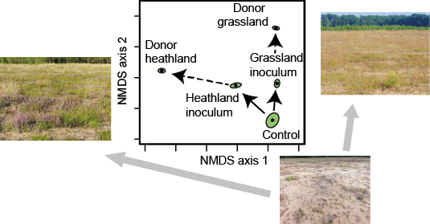

Transdisciplinary Soil & Agro Ecologist, Senior Scientist Soil Biodiversity & Ecology
@ Van Hall Larenstein University of Applied Sciences (The Netherlands).
I study how soil biota interact to shape soil functioning, multifunctionality and soil health, in the context of agricultural, forestry, urban and natural ecosystem settings, with a central focus on understanding and steering soil microbiomes for optimal soil functioning. I apply a combination of experimental and data science methods, combining physico-chemical, management, plant and microbiome data in causal models. My research overall is build on a backbone of a transdisciplinary research approach. My ultimate aim? Healthy people on a healthy planet.
Since March 2025, I am the coordinator of the SOILCRATES Living Lab North Netherlands on Soil Health Innovation launched as part of the EU SOILCRATES project. Here, we leverage tailored regional soil health approaches, using bottom-up co-creation with a range of stakeholders. Jointly, we experiment, evaluate and demonstrate their value for soil health and for farming businesses. Previously, I developped a new method to measure soil health (MSCA Postdoctoral Fellowship), designed and managed a national soil biodiversity sampling campaign in the Netherlands (OHM/SoilProS), and led a global knowledge synthesis on soil translocation for nature restoration. I contributed to the FAO 2020 State of knowledge of soil biodiversity report and co-wrote an open letter urging scientific support for the Nature Restoration Directive, which was endorsed by 6000+ scientists and contributed to the adoption of the directive. I am editor Soil Biodiversity for SOIL and I serve as a domain expert for the Dutch Ecological Authority.
Keywords: Microbiome steering | Data science | Transdisciplinary research
The soil is home to an suite of alien-looking inhabitants: thousands of bacterial, fungal and protozoa species spin their complex interaction web belowground. Together with soil fauna, such as nematodes, mites, springtails, termites and earthworms, producing healthy soil in the process. However, it is unclear how this exactly works, who is doing what and in interaction with whom? Soil inoculation, the deliberate introduction of novel soil microbiomes, can alter the interplay between plants and soil biota. I have shown that this leads to improved ecosystems with effects lasting potentially for decades. Soil inoculation is a method to experimentally enhance our understanding of the microbiomial drivers of soil functioning and health, by maintaining the biotic complexity of functional communities and their competitive ability. The resulting knowledge helps build resilient soils that support sustainable farming.

Data analytical approaches
With the revolution in sequencing technology, automated sampling and high throughput analysis of physico-chemical properties, data collection is no longer a key stumbling block. Instead, the ability to work with these complex multidimensional datasets becomes the main challenge From the start of my career I have invested in building experience with a broad range of data analytical techniques. These include GLMM/GAMM, machine learning (BRT, random forests), multivariate analysis (ordination, classification), meta-analysis, spatio-temporal analyses, structural equations modelling, from Petri-dish to global scale in studies focussed on the (agro-)ecology of land, water and the air. Recently, I worked on exploratory approach to microbiome network analyses (co-response network analysis implemented in SpeSpeNet). Currently, I am investing in a collaborative effort to have algoritms reconstruct causal models from observational data alone (see the Dragon tool). The aim is to causally unravel to roles of the different organisms in soil microbiomes and their impact on soil health.
Transdisciplinary action research
During my time as a postdoc in the group of Johan Six (ETH Zurich) I found myself in a group hosting both biogeochemists involved in hard-core mechanistic modelling as well as a mix of economists and political scientists engaging in qualitative research of social processes using (semi-structured) interviews and focus group discussions. Closely affiliated with ETH’s Transdisciplinary (Td-) lab, I was exposed for the first time to the significance of the transdisciplinary approach to societal problems and the new role of science. What if your optimized, prototyped, scalable, natural science solution is something your stakeholders can’t or don't want to use? Then you made a false start. Realizing Td-research is what I wanted to be able to do, I also realized I was not equipped for it at all. However, I did know that the best way to learn something - is to teach it. So thats what I did. Or, more acurately, I initiated a postgraduate course on Td-field course where I brought in the experienced Td-teachers so I could learn from the pro's With Johan we applied for funding and in July 2022 we ran the African Roads to Sustainable Agroecology - Transdisciplinary Field Course in Eldoret, Kenya hosting some 35 PhD students from Africa and Europe to have a shared conversation about agro-ecological opportunities within the biophysical, economical and social reality on the ground. The skills I learned in that course transformed my approach to stakeholder participation and networking and has given me a profoundly deeper understanding of the how and why of many things in the process.